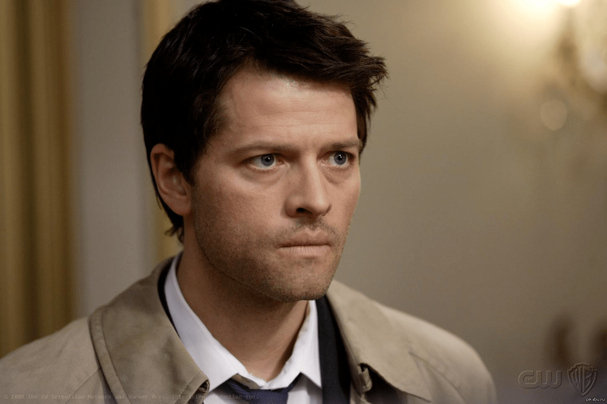

Миша Коллинз рассказал о реакции на закрытие «Сверхъестественного»
Сериал «Сверхъестественное» закончится после 15 сезона, и это один из самых грустных и счастливых моментов сериала на съемочной площадке, по словам звезды Миши Коллинза. Актер рассказал во время MCM London Comic Con: "Я думаю, что, как ни странно, один из самых приятных моментов, которые у нас были на съемочной площадке, был, когда мы объявили съемочной группе, что собираемся закончить шоу. И я смотрел, как все становятся эмоциональными и начинают обнимать друг друга и плакать, и мы потратили час на то, чтобы встретиться с сотней разных людей, каждый из которых сказал: Я люблю тебя, я буду скучать по тебе". Коллинз присоединился к сериалу в 2008 году, дебютировав в роли ангела Кастиэля в премьере четвертого сезона.Финальный сезон «Сверхъестественного» из 20 эпизодов завершится в общей сложности 327 эпизодами, что сделает его самым продолжительным научно-фантастическим шоу в истории американского телевидения.